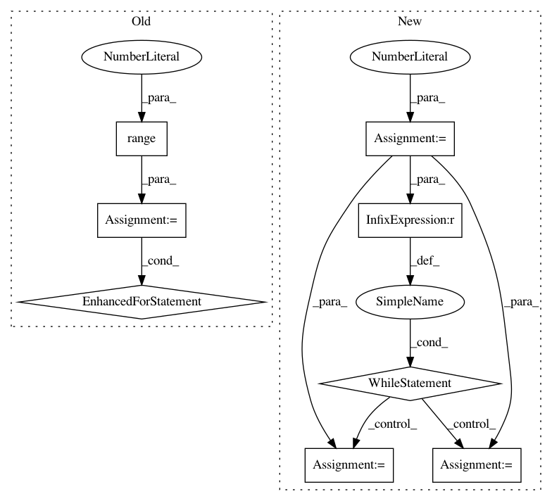

e170a8bad93da7676dadfdc8be32072a7bb46f75,official/transformer/v2/transformer_main.py,TransformerTask,train,#TransformerTask#,201
Before Change
cased_score, uncased_score = None, None
cased_score_history, uncased_score_history = [], []
for i in range(1, iterations + 1):
print("Start train iteration:{}/{}".format(i, iterations))
history = None
if params["use_ctl"]:
if not self.use_tpu:
raise NotImplementedError(
"Custom training loop on GPUs is not implemented.")
train_steps_per_eval = tf.convert_to_tensor(
flags_obj.steps_between_evals, dtype=tf.int32)
// Runs training steps.
train_steps(train_ds_iterator, train_steps_per_eval)
train_loss = train_loss_metric.result().numpy().astype(float)
logging.info("Train Step: %d/%d / loss = %s",
i * flags_obj.steps_between_evals, flags_obj.train_steps,
train_loss)
checkpoint_name = checkpoint.save(
os.path.join(
flags_obj.model_dir,
"ctl_step_{}.ckpt".format(i * flags_obj.steps_between_evals)))
logging.info("Saved checkpoint to %s", checkpoint_name)
else:
if self.use_tpu:
raise NotImplementedError(
"Keras model.fit on TPUs is not implemented.")
history = model.fit(
train_ds,
initial_epoch=i - 1,
epochs=i,
steps_per_epoch=flags_obj.steps_between_evals,
callbacks=callbacks,
// If TimeHistory is enabled, progress bar would be messy. Increase
// the verbose level to get rid of it.
verbose=(2 if flags_obj.enable_time_history else 1))
logging.info("Train history: {}".format(history.history))
print("End train iteration:{}/{} global step:{}".format(
i,
iterations,
i*flags_obj.steps_between_evals))
if (flags_obj.bleu_source and flags_obj.bleu_ref):
uncased_score, cased_score = self.eval()
cased_score_history.append([i, cased_score])
uncased_score_history.append([i, uncased_score])
stats = ({
"loss": train_loss
} if history is None else misc.build_stats(history, callbacks))
if uncased_score and cased_score:
After Change
model = transformer.create_model(params, is_train=True)
opt = self._create_optimizer()
current_step = 0
checkpoint = tf.train.Checkpoint(model=model, optimizer=opt)
latest_checkpoint = tf.train.latest_checkpoint(flags_obj.model_dir)
if latest_checkpoint:
checkpoint.restore(latest_checkpoint)
logging.info("Loaded checkpoint %s", latest_checkpoint)
current_step = opt.iterations.numpy()
if params["use_ctl"]:
train_loss_metric = tf.keras.metrics.Mean(
"training_loss", dtype=tf.float32)
else:
model.compile(opt)
model.summary()
if self.use_tpu:
// Different from experimental_distribute_dataset,
// experimental_distribute_datasets_from_function requires
// per-replica/local batch size.
params["batch_size"] /= self.distribution_strategy.num_replicas_in_sync
train_ds = (
self.distribution_strategy
.experimental_distribute_datasets_from_function(
lambda ctx: data_pipeline.train_input_fn(params, ctx)))
else:
train_ds = data_pipeline.train_input_fn(params)
map_data_fn = data_pipeline.map_data_for_transformer_fn
train_ds = train_ds.map(
map_data_fn, num_parallel_calls=params["num_parallel_calls"])
if params["use_ctl"]:
train_ds_iterator = iter(train_ds)
callbacks = self._create_callbacks(flags_obj.model_dir, 0, params)
// TODO(b/139418525): Refactor the custom training loop logic.
@tf.function
def train_steps(iterator, steps):
Training steps function for TPU runs.
Args:
iterator: The input iterator of the training dataset.
steps: An integer, the number of training steps.
Returns:
A float, the loss value.
def _step_fn(inputs):
Per-replica step function.
inputs, targets = inputs
with tf.GradientTape() as tape:
logits = model([inputs, targets], training=True)
loss = metrics.transformer_loss(logits, targets,
params["label_smoothing"],
params["vocab_size"])
// Scales the loss, which results in using the average loss across all
// of the replicas for backprop.
scaled_loss = loss / self.distribution_strategy.num_replicas_in_sync
// De-dupes variables due to keras tracking issues.
tvars = list(
object_identity.ObjectIdentitySet(model.trainable_variables))
grads = tape.gradient(scaled_loss, tvars)
opt.apply_gradients(zip(grads, tvars))
// For reporting, the metric takes the mean of losses.
train_loss_metric.update_state(loss)
for _ in tf.range(steps):
train_loss_metric.reset_states()
self.distribution_strategy.experimental_run_v2(
_step_fn, args=(next(iterator),))
cased_score, uncased_score = None, None
cased_score_history, uncased_score_history = [], []
while current_step < flags_obj.train_steps:
remaining_steps = flags_obj.train_steps - current_step
train_steps_per_eval = (
remaining_steps if remaining_steps < flags_obj.steps_between_evals
else flags_obj.steps_between_evals)
current_iteration = current_step // flags_obj.steps_between_evals
print("Start train iteration at global step:{}".format(current_step))
history = None
if params["use_ctl"]:
if not self.use_tpu:
raise NotImplementedError(
"Custom training loop on GPUs is not implemented.")
// Runs training steps.
train_steps(train_ds_iterator,
tf.convert_to_tensor(train_steps_per_eval, dtype=tf.int32))
current_step += train_steps_per_eval
train_loss = train_loss_metric.result().numpy().astype(float)
logging.info("Train Step: %d/%d / loss = %s",
current_step, flags_obj.train_steps, train_loss)
checkpoint_name = checkpoint.save(
os.path.join(
flags_obj.model_dir,
"ctl_step_{}.ckpt".format(current_step)))
logging.info("Saved checkpoint to %s", checkpoint_name)
else:
if self.use_tpu:
raise NotImplementedError(
"Keras model.fit on TPUs is not implemented.")
history = model.fit(
train_ds,
initial_epoch=current_iteration,
epochs=current_iteration + 1,
steps_per_epoch=train_steps_per_eval,
callbacks=callbacks,
// If TimeHistory is enabled, progress bar would be messy. Increase
// the verbose level to get rid of it.
verbose=(2 if flags_obj.enable_time_history else 1))
current_step += train_steps_per_eval
logging.info("Train history: {}".format(history.history))
print("End train iteration at global step:{}".format(current_step))
if (flags_obj.bleu_source and flags_obj.bleu_ref):
uncased_score, cased_score = self.eval()
cased_score_history.append([current_iteration + 1, cased_score])
uncased_score_history.append([current_iteration + 1, uncased_score])
stats = ({
"loss": train_loss
} if history is None else misc.build_stats(history, callbacks))
if uncased_score and cased_score:
In pattern: SUPERPATTERN
Frequency: 3
Non-data size: 8
Instances
Project Name: tensorflow/models
Commit Name: e170a8bad93da7676dadfdc8be32072a7bb46f75
Time: 2019-08-30
Author: gardener@tensorflow.org
File Name: official/transformer/v2/transformer_main.py
Class Name: TransformerTask
Method Name: train
Project Name: lengstrom/fast-style-transfer
Commit Name: 31bfc7c1ce9dac771dbd5e2edf2d5e789d8b1aaa
Time: 2016-12-23
Author: jonathan.e.m.bocker@gmail.com
File Name: evaluate.py
Class Name:
Method Name: from_pipe
Project Name: TheAlgorithms/Python
Commit Name: e58a5e68424df74a4c7b30df04162c775044405c
Time: 2019-07-30
Author: 44649323+FrogBattle@users.noreply.github.com
File Name: sorts/tim_sort.py
Class Name:
Method Name: tim_sort